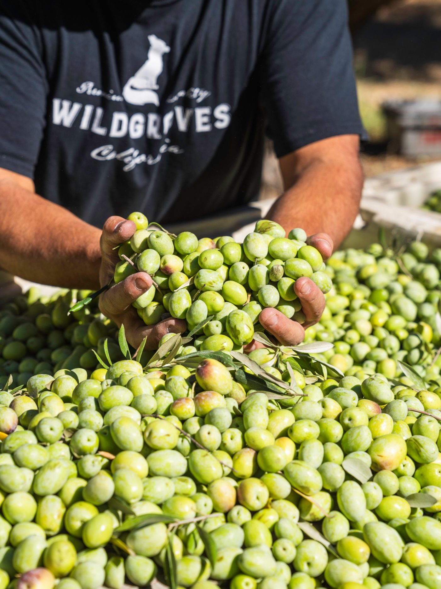
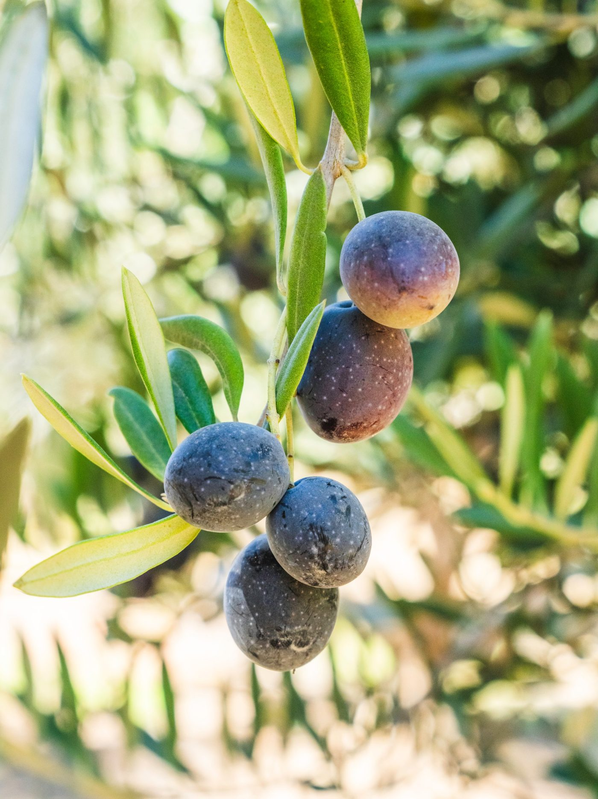

Wild Groves · Field Notes
The Olive Oil He Never Intended to Sell
A test run at the mill. A ripe-olive oil nobody planned to sell. And a bottle that changed my mind.

A few days ago, I rode out to Corning with Dewey Lucero, the olive oil guru behind Wild Groves. We wanted to see how the harvest was coming along and get some photos and videos for the website and social media. On the drive home, he took a call from Lewis, the miller.
Dewey had sent a pallet of overripe olives to the mill. Not all his olive varieties ripen at the same time, and these were already turning purple and black, well past the stage he prefers for his Olio Nuovo. He never planned to sell the oil. The point was to test the equipment before the main harvest arrived.
Over the years, I've documented the olive milling process, but always when the mill was in operation. It never occurred to me that a mill might sit idle for nine months of the year, then suddenly need to run almost nonstop during harvest.

That trial run turned up a bearing that wasn't working properly. Better to find that out now than with trucks full of freshly picked olives sitting outside, waiting to be milled.
Once olives are harvested, time matters. Ideally, they should be pressed within 24 hours of being picked. There's not much room for equipment failures or unexpected delays.
That's why Dewey sent over those riper olives. He paid out of his own pocket to have them picked and hauled to the mill, just to make sure everything was running smoothly before the green olives for his Olio Nuovo were ready to harvest.
And he isn't the only one who benefits. Every grower who brings olives to that mill gets equipment that's already been tested.
Dewey would never brag about something like that. I've never heard him mention it. I only know because I overheard the phone call. He gave me a bottle of that ripe-olive oil. He wasn't going to sell it, but he wanted to know what I thought.

A Different Kind of Olive Oil
I didn't love it at first sniff. It smelled a lot like black olives, which have never been my favorite. My wife liked it more than I did.
The next morning we made our usual salad dressing, this time with the ripe-olive oil (recipe below). Yes, we eat salad for breakfast. Some people think that's weird, and by "some people," I mean my mother-in-law. It's arugula, a little goat cheese, the dressing, and a couple of poached eggs on top. It's delicious.
It gave the dressing a flavor I'd never tasted before, and I started imagining it with all kinds of other foods. That night for dinner, I used it to pan-fry bison burgers.
I'd always heard you shouldn't cook with good extra virgin olive oil over high heat. When I looked into it, that turned out not to be the whole story. The same polyphenols that help protect our bodies from oxidative damage also protect the oil when it's heated. Some are lost in the pan, but studies show extra virgin olive oil holds up remarkably well compared with other cooking oils. There's a good 2022 scientific review on it if you're curious.
Bison is lean, so a little fat goes a long way, and this oil made a real difference. It was honestly one of the best burgers I've ever had. That hint of olive did wonders for it.
Now I'm thinking about drizzling some over a pizza fresh out of the oven. I like black olives on pizza, so why not?
It's funny. Dewey gave me this oil because he didn't want to sell it, and now I'm finding all sorts of things I want to cook with it.
I'm still a bigger fan of green-olive oil, made from olives that are just starting to ripen, mostly green with hints of yellow and purple. It also tends to have more of the beneficial polyphenols.
But this was an eye-opener. I've been photographing Wild Groves products for ten years, and there's still plenty to learn.